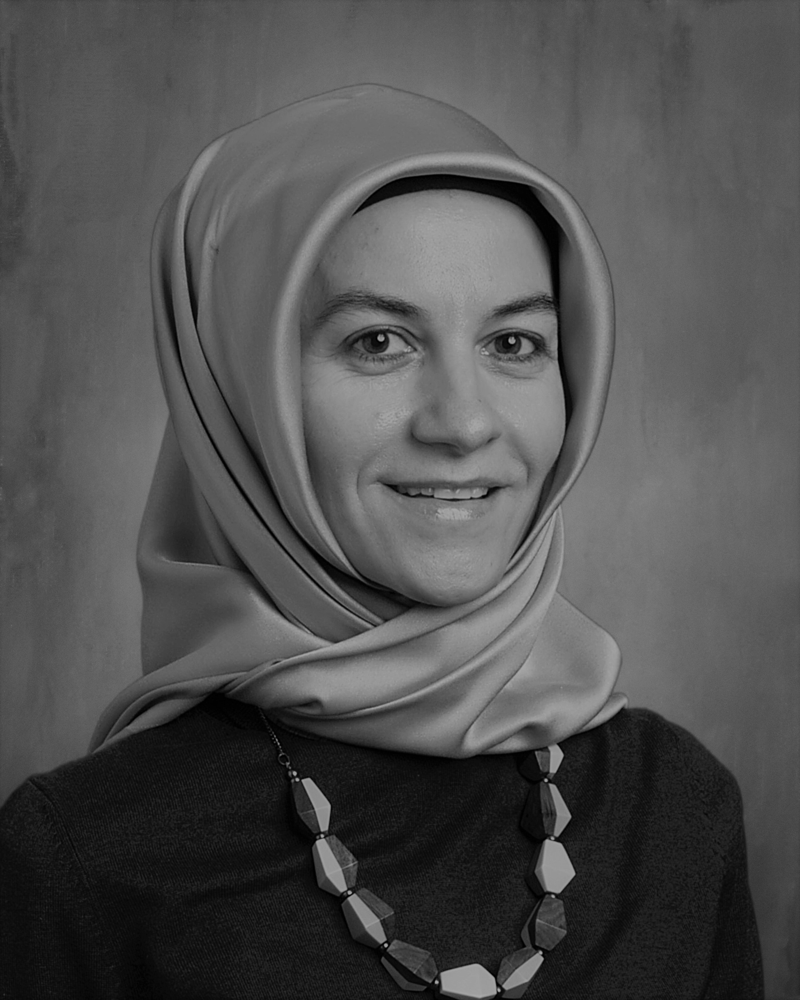

Alma Erden
“Who dares to teach must never cease to learn.” -John Cotton Dana
My name is Alma Erden. I am originally from Albania, a small European
country. I live in Ames, a quiet city in Iowa.
I have always been passionate about learning and education. I attended
the University of Tirana in Albania in 2000. I earned my Bachelor of Arts
degree in Turkish as a Second Language Specialist. Currently, I am working
toward my Master of Science degree in Learning Technologies and Design with
a certification in User Experience and Usability at the University of Missouri-Colombia.
I taught Turkish as a Second Language in high schools for over ten years and held
different administrative roles in educational settings. I feel fortunate that I had
the opportunity to teach in three different countries: Albania, Turkey, and Kosovo.
This experience has given me a new perspective on different cultures and the various
contexts in which education and learning occur. One of my top priorities in my
teaching career has been to promote an inclusive learning environment
that encourages students' academic and personal growth.